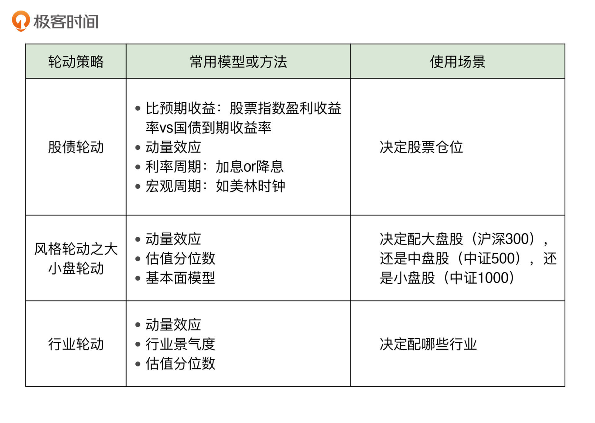
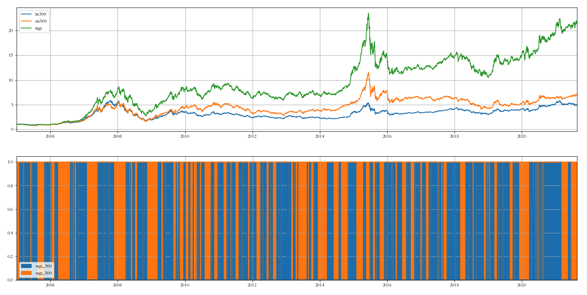
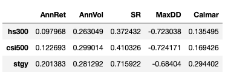
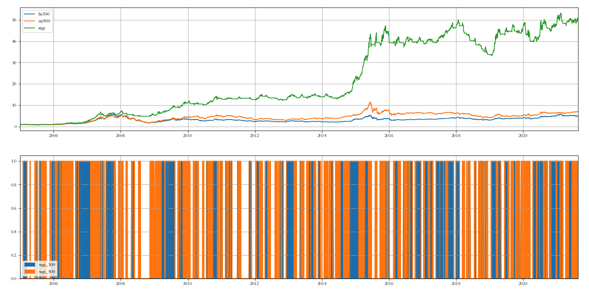
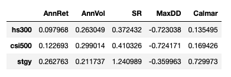
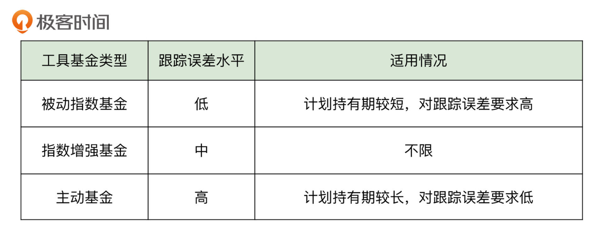

- 00 开篇词 为什么说程序员最适合学财富管理？.md.html
- 01 财富框架：建立属于你自己的财富双塔.md.html
- 02 个人发展：你自己的发展才是最大的财富源泉.md.html
- 03 理财金字塔：如何建立稳固的投资理财结构？.md.html
- 04 实战知识：有哪些收益稳健的经典资产配置组合？.md.html
- 05 支点投资法：主动投资是讲逻辑的！.md.html
- 06 不当韭菜：在财富管理的过程中摆正心态，知己知彼.md.html
- 07 职业方向：如何选择一个有前景的职业方向？.md.html
- 08 职业规划：大公司VS小公司，怎样选择更有前途？.md.html
- 09 期权股权：如何正确处理公司的期权、股权？.md.html
- 10 跳槽涨薪：如何规划一条合理的职业道路？.md.html
- 11 财富拓展：35岁失业？程序员如何拓宽财富渠道？.md.html
- 12 房产投资：如何做出理性的买房决策？.md.html
- 13 实战知识：让我们编程计算下怎么还房贷最合适.md.html
- 14 基金投资：如何让专业人士帮你赚钱？.md.html
- 15 实战知识：如何选出一只优质的基金？.md.html
- 16 股票投资：最适合散户的股票投资方法是什么？.md.html
- 17 投资闭环：如何成为越来越专业的投资者？.md.html
- 18 技术优势：程序员如何用技术超越其他投资者？.md.html
- 19 量化投资：典型的量化投资系统都包含哪些模块？.md.html
- 20 价值投资：永远不过时的中长期投资策略.md.html
- 21 趋势跟踪：怎样跟着趋势一起赚钱？.md.html
- 22 轮动策略：如何踩准市场变换的节奏？.md.html
- 23 对冲思想：这个世界上有稳赚不赔的生意吗？.md.html
- 24 多因子模型：整合不同策略，形成合力的顶层框架.md.html
- 25 机器学习：我们能用机器学习来建立投资模型吗？.md.html
- 26 量化实战：从0到1搭建起一套简单的量化投资系统（上）.md.html
- 27 量化实战：从0到1搭建起一套简单的量化投资系统（下）.md.html
- 番外一 王喆对话李腾：程序员对基金经理的灵魂十问（上）.md.html
- 番外三 有哪些能够持续学习的参考资料和相关网站？.md.html
- 番外二 王喆对话李腾：程序员对基金经理的灵魂十问（下）.md.html
- 番外四 知识总结：这门课的全部思维导图.md.html
- 答疑课堂（一） 财富框架篇、个人发展篇思考题集锦.md.html
- 答疑课堂（二） 投资实战篇、投资进阶篇思考题集锦.md.html
- 结束语 知行合一：财富管理是一生的事情.md.html
- 捐赠
22 轮动策略：如何踩准市场变换的节奏？
你好，我是李腾。今天我来讲另一个重要的投资策略，轮动策略。
上一讲，我介绍了趋势跟踪策略，它主要是根据一个资产标的近期的走势，作出做多或者做空的决定。所以，它比较的是同一投资标的自身不同时期的价格，是一种纵向对比的策略。而今天我要介绍的轮动策略，则是通过比较不同资产标的的相对性价比，来作出投资决策的，是一种横向对比的策略。
这已经是我们讲的第三种投资策略了，不同投资策略的目的都是在投资中盈利，但它们理解投资的角度却是千差万别。今天，我们就一起来看看这些问题：轮动策略是从哪个角度来理解投资这件事情的？我们又应该如何设计一个具体的可执行的轮动策略呢？现在，我们就正式开始今天的旅程吧。
轮动策略和趋势跟踪策略的对比
刚才我提到，轮动策略是进行横向对比，趋势跟踪策略是进行纵向对比。这么说可能还是太笼统了，那么这两种投资策略的具体区别在哪里呢？
这里我举一个简单的例子，你就可以看出这两种策略的差异了：假设资产A近期持续下跌，如果是经典的趋势策略，一定是做空的。但是，如果资产A是同类资产里跌得最少的，那么轮动策略就有可能做多这个资产。也就是说，和资产A本身的价格变动趋势比起来，轮动策略更关注的是资产A在同类资产中的相对表现。这是两种投资策略的整体性区别。
在趋势跟踪策略里，对每一个投资标的，我们都单独训练一个模型。而在轮动策略里，我们把不同投资标的的数据混在一起，作为样本，来训练一个统一的横截面模型。趋势策略里的预测模型更关注标的资产未来的绝对收益，轮动策略里的横截面预测模型，则更关注不同标的之间的相对好坏。
一般而言，趋势跟踪策略更适合底层具体标的的交易操作，而轮动策略更适合顶层配置。例如，在多品种多周期复合趋势跟踪策略中，交易具体每个品种的策略是时间序列模型，但顶层资金如何动态分配到各个品种，一般是用轮动策略。
在支撑策略的底层逻辑上，二者也存在着根本性的不同。上一讲我们提到，支撑趋势跟踪策略的底层逻辑有三个，分别是信息的传播过程，经济或产业周期的存在，以及投资者情绪的推动。而支撑轮动策略的底层逻辑，主要是市场上的资金在不同板块、不同风格或不同策略之间切换时的时间差。
市场资金在切换赛道的时候，需要一个过程，我们的轮动策略就是要预判或识别这个切换过程的发生，并且在切换之前，或者切换过程的早期，就将自己的资金布局到市场资金将要流入的地方。走在市场的前头，自然就能赚取到超额收益，这就是轮动策略赚钱的道理。
这时你可能会说：道理我懂了，可是我们要怎么才能做到预判切换过程，及时进行资金布局，走在市场的前头？这是个好问题，也正是这一讲要帮你解决的轮动策略的难点。下面，我们就先介绍具体的轮动策略有哪些，再看看轮动策略的详细执行方法。
有哪些常见的轮动策略？
市场上常见的轮动策略有很多，比如股票和债券资产之间的股债轮动，全球各国股市之间的国家轮动，股市内的行业轮动、风格轮动和主题轮动等等。这些轮动策略，由模型或者人工判断来驱动，总是超配当前相对看好的资产，低配当前相对看跌的资产。如果模型或者人工的判断是对的，那么轮动策略就能增加你的投资收益，或者在保持收益的条件下减少回撤。
下面，我来分别介绍下5种常见的轮动策略。
股债轮动
首先我要介绍的是股债轮动。因为股票和债券可以说是市场上最重要的两块资产，而且股票和债券的相关性不高，所以股债轮动是一种经常用来解决大类资产配置问题的轮动策略。
股债轮动最经典的方法，是比较股票指数的盈利收益率与国债的到期收益率，哪边高投哪边，或者偏配哪边。其中，股票指数的盈利收益率，其实就是股票指数整体市盈率的倒数，也就是指数成分股背后所有上市公司的年盈利总和除以市值总和。
从经济逻辑上来说，这种方式是非常合理的。因为我们持有股票，就是为了获得背后上市公司的盈利现金流，而持有国债就是要获取国债持有到期的各期票息和到期本金现金流。到底该持有哪边，应该看哪边的现金流的年化收益更高。这种方法整体比较了两边的两种现金流收益率的高低。
此外，还有许多其他支撑股债轮动的模型或者方法。有的人喜欢观察资金的动量效应，例如根据新发行股票基金的募集规模，来判断资金是否在持续流入股市；有的人喜欢根据宏观背景判断，例如根据央行的公开表述，判断未来是加息环境还是降息环境；还有的人喜欢根据通胀和GDP增速，判断大的经济周期，来作出轮动决定。
风格轮动
我要介绍的第二种轮动策略是风格轮动。顾名思义，风格轮动一般是指在股票投资中对不同风格股票的轮动投资策略。
具体来说，投资者喜欢把股票分成不同的风格类别，最常见的风格划分方式有两种，第一种是大盘股和小盘股，第二种是价值股和成长股。其中，大小盘轮动是个人投资者最常考虑的风格轮动策略，简单实用，也不占用过多的交易精力。而在大小盘轮动中，最经典的就是二八轮动策略，下面我来详细介绍下它。
二八轮动，指的是市值最大的前20%数量的大盘股和剩下数目占80%的中小盘股之间的轮动。经典二八轮动策略的主要驱动逻辑是动量。动量就是资产近期涨幅的横向排名，它与趋势很像，但多了一层横向比较：看谁过去涨得多或跌得少，然后就买谁。
二八轮动假设了市场资金的流动是有惯性的：当近期大盘股涨得多的时候，后续大概率资金还会持续地向大盘股流入；直到这个趋势难以持续下去的时候，资金又会向小盘股流动，而且这个趋势一旦开始，资金就又会一直往小盘股流入。
当然，市场上除了动量驱动的大小盘轮动策略外，还有一些其他维度的轮动模型，例如利率模型、基本面模型、估值分位数模型等等。具体采用哪种，你还需要根据自己熟悉的领域和能掌握的程度来决定。
行业轮动
我要介绍的下一种轮动策略是行业轮动，就是在不同的行业之间进行轮动的策略。和风格轮动一样，驱动行业轮动的模型也可以是动量模型，也就是看哪个行业指数近期涨幅相对较高。除此之外，行业轮动策略还可以基于不同行业的景气周期。比如房地产周期模型就是根据房地产行业，以及相关行业的周期规律来进行轮动的模型。具体来说，在房地产新开工的上升阶段，应该超配钢铁有色建筑建材行业，而在之后的房地产竣工阶段，则应该轮动到一些家电轻工行业。
在证券公司研究所，有很多不错的行业轮动模型的报告，一般都在各自团队的公众号里发布。这里，我给出三个不同方向的例子，你可以以它们为起点，链接到更多的报告。
- 开源证券金工团队的行业轮动策略典型报告（侧重技术分析模型）
- 华泰证券金工团队的行业轮动策略典型报告（侧重经济周期模型）
- 海通证券策略团队的行业轮动策略典型报告（侧重人工经验判断）
主题轮动
还有一种很有趣的轮动策略，叫做主题轮动，你可以把它理解为一种由模型或者流程支撑的，系统化的主题追踪策略。
这里举个我自己熟悉的例子。在大约十年前的时候，我曾经听说过这样一件事：当时一家业绩出色的主动股票型私募，宣称自己就是做主题轮动策略的。他们家的基金经理每天晚上七点到七点半，准时收看新闻联播，然后做两个小时的冥想，根据了解到的各个方面的新闻，来判断出市场下面一个阶段可能被追逐的几个热点主题。而这些主题，他们早就提前安排研究员各自准备好了一篮子最相关的股票。于是，第二天这位基金经理就可以根据判断，调整到最新热点的股票组合上了。
当然，我并不是说这家私募宣称的决策流程一定是真实的，也并不是推荐你去采用这种方式。但是，这种方式确实有逻辑上的合理性，可以体现出主题轮动策略的大致原理。如果你确实想要进行主题轮动操作，那就需要通过某种方式，建立自己对这个世界变化的快速认知，并把它用投资组合准确地表达出来。
全球轮动
最后，我想简单介绍下全球轮动，它的意思是在全世界各个国家的股票指数之间进行轮动操作，背后的逻辑主要是考虑各个国家的经济发展水平，或者在全球分工中的定位。比如，一个国家是发达市场还是新兴市场，当前在全球分工中的定位是原材料提供国，还是劳动力输出国，或者是先进科技和资本的输出国。
全球轮动策略的门槛比较高，采用这个策略的，主要是一些宏观对冲基金，或者有国际配置经验的大型金融机构。
到这里，我介绍了5种常见的轮动策略。其中，普通投资者比较常用的是股债轮动、风格轮动和行业轮动。我把这几种轮动策略、驱动它们的常用模型或方法，以及它们的使用场景总结成了一张表格，来帮助你作出适合自己的选择：

轮动策略的回测实例
到这里，我们已经理解了轮动策略是怎么赚钱的，还了解了几种常见的轮动策略。接下来，我们再看看具体怎么运用它们。
运用轮动策略进行投资，首先要想清楚投资的逻辑，并在执行前先做回测。回测的重要性，我在上一讲已经强调过了。下面，我就以个人投资者最常用的二八轮动为例，来讲述一下它详细的执行过程，以及回测的结果。
二八轮动（总是满仓版本）
首先，我们来看总是满仓的版本。
我们以沪深300指数和中证500指数为交易标的，其中沪深300指数代表大盘股，中证500指数代表中小盘股。每天回看这两个指数最近20个交易日的涨幅，当沪深300的区间涨幅大于中证500时，持有沪深300；当中证500的区间涨幅大于沪深300时，持有中证500。
下面的图1由两张子图和一张表格组成。第一个子图展示了两个交易标的和二八轮动策略各自的净值曲线，绿色线、黄色线和蓝色线分别代表二八轮动策略、中证500和沪深300。第二个子图展示了每一天持有的是哪个标的，蓝色是沪深300，黄色是中证500。最下面的业绩指标表中，AnnRet表示年化收益，AnnVol表示年化波动率，SR表示夏普率，MaxDD表示最大回撤，Calmar表示年化收益与最大回撤的比值。


从上述结果可以看出，二八轮动策略在过去16年历史数据上的表现非常优异。从收益角度看，策略的长期年化收益达到了20%，远高于沪深300和中证500分别为约10%和12%的年化收益，长期复利累积下来的财富效应，是沪深300和中证500指数均值的4倍左右（具体请看第一张子图三条曲线最右端的高度）。
从风险角度看，策略并没有显著增加波动率，甚至还小幅降低了最大回撤。这说明轮动策略在保持波动和回撤水平的条件下，显著地增强了收益，这些信息提示策略有效。
从换手率角度看，策略大体上每两个月轮动一次，频率可以接受。如果你观察更细致一些，看看策略有效性在时间轴上的分布，可以注意到策略在近两年半，也就是2019年以来特别有效，在此期间，沪深300和中证500基本是震荡微升走势，而策略是显著上涨趋势。
二八轮动（可以空仓版本）
下面，我们来看二八轮动可以空仓的版本。
总是满仓版本的二八轮动虽然性价比很高，但回撤水平仍然不是普通个人投资者能接受的，所以我又做了一个可以空仓的版本。它与前面版本的唯一差异就是，当回看20个交易日涨幅时，如果两个指数均为下跌，就选择空仓。


从回测结果可以看出，策略长期年化收益进一步提高到了26%，而最大回撤降低了一半左右，降到了36%，整体效果进一步显著提升。
看时段的话，策略明显抓住了2007年牛市、2009年上半年牛市和2015年上半年牛市，也躲过了2015年下半年的股灾。但美中不足的是，因为策略会空仓，所以2019到2020两年的慢牛行情中，策略收获不多，这也是降低最大回撤的合理代价。可以看出，在不同的时段，两个版本各有利弊，你可以根据自己的偏好选择合适的策略版本。
为了方便你更好地理解回测的过程，我把相关数据和代码放在了这个链接中，你可以自己运行尝试下。
轮动策略的交易执行
前面我介绍过，轮动策略主要用于顶层配置，它的交易标的通常是一些资产类别指数。如果直接交易的话，需要买卖一篮子指数成分股，这非常繁琐，所以我们一般会通过交易基金来复制资产类别指数的收益。
如果你想要做股债轮动，那么股票部分可以使用宽基股票基金；如果想做风格轮动，可以使用大盘股基金和小盘股基金；如果你想要做行业轮动，那么可以使用各种行业基金。现在市场上这几类基金工具可以选择的种类都非常丰富，能满足你绝大多数的需要。
这些工具型基金，都可以根据对资产类别指数的跟踪误差水平分成三类，按跟踪误差水平由低到高排列，分别是被动指数型、指数增强型和主动型。举个例子，如果你要配置医药行业，那么有医药行业的被动指数型基金，也有医药行业的指数增强型基金，还有医药行业的主题型基金，也就是主动基金。
那么，如何在这三类基金工具中作出选择呢？我选择的基本原则是：你的计划持有期越短，就应该选择跟踪误差越小的基金工具，这样大概率能够跟上相应资产类别指数的短期涨幅；你的计划持有期越长，就应该选择跟踪误差越大的基金工具，这样你还能预期有一定的超额收益；如果你拿不定主意，就默认选指数增强型基金，因为多数情况下，它是不太费脑子，效果也比较好的选择。

小结
今天，我详细介绍了轮动策略的概念、分类，和执行的细节。下面，我就把这一讲的重点知识总结一下，供你回顾：
- 跟纵向对比的趋势跟踪策略相比，轮动策略是比较不同资产标的的相对性价比，来作出投资决策的，是横向对比的策略。
- 常见的轮动策略有股债轮动、风格轮动、行业轮动、主题轮动和全球轮动等。
- 二八轮动，指的是市值最大的前20%数量的大盘股，和剩下数目占80%的中小盘股之间的轮动。
- 具体选择哪种轮动策略，要根据自己可投入的精力，以及自身的信息优势等因素来决定。
- 轮动策略主要用于顶层配置，它的交易标的通常是一些资产类别指数，我们一般会通过交易基金来复制资产类别指数的收益。
今天我们比较了趋势跟踪策略和轮动策略，前者是纵向的策略，后者是横向的策略，那还有没有更复杂的策略呢？当然是有的。下一讲，我们将学习基于对冲思想的投资策略。毫不夸张地说，它是横向策略的巅峰之作，蕴含了人类构建投资组合的最高智慧，目的是建立一种穿越周期，跟时间、经济形势、单一投资标的涨跌都无关的投资组合。我们经常听到的“对冲基金”，主要就是基于对冲思想来进行投资的。下一讲，就让我们一起揭开对冲思想的神秘面纱。
思考题
如果让你设计一种行业轮动策略，你会怎么设计呢？比如，你会如何确定应该在哪些行业上进行轮动？你选择行业的标准是什么呢？
期待在留言区看到你的思考和见解。同时，如果你对这一讲的知识有任何困惑，都可以在留言区提出来，我会一一为你解答。
© 2019 - 2023 Liangliang Lee. Powered by gin and hexo-theme-book.